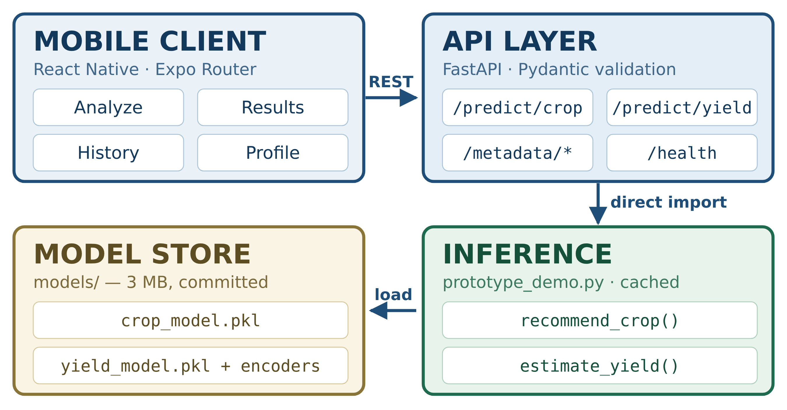
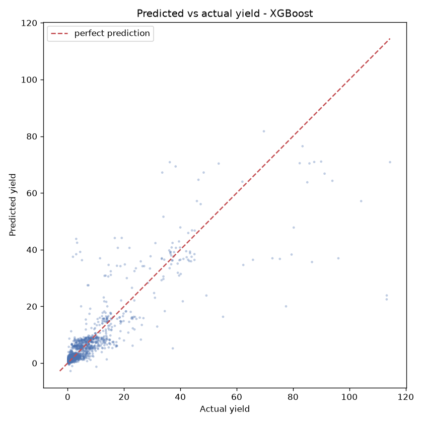

01 ABSTRACT
Small-scale farmers choose crops and judge expected harvests from experience rather than data.
AgriSense pairs two supervised models — a Random Forest recommending one of 22 crops from soil and
weather readings, and an XGBoost regressor estimating yield per hectare — behind a FastAPI service and a
React Native application. Trained on 2,200 and 48,681 public records, it reaches 99.55% classification
accuracy and R² 0.7403, answering both questions on a phone in under a second.
02 PROBLEM STATEMENT
- Most Indian holdings are small or marginal; crop choice and yield expectation rest on inherited experience.
- Soil tests return nutrient values, not decisions — the gap is interpretation, not measurement.
- Shifting rainfall and repeated cropping erode the reliability of that experience.
- Prior ML work rarely reaches the farmer: it ends at a notebook, not a usable tool.
03 OBJECTIVES
01
Preprocess two public datasets; derive yield and remove invalid and extreme records.
02
Build and iteratively refine classification and regression models.
03
Benchmark three models per task against a baseline, then tune the winner.
04
Evaluate with accuracy / precision / recall / F1 and RMSE / MAE / R².
05
Deliver the trained models through a REST API and a mobile client.
04 DATASETS
Crop Recommendation [4]
2,200 rows · 7 numeric features (N, P, K, temperature, humidity, pH, rainfall) · 22 balanced classes, 100 records each · stratified 80/20 → 1,760 / 440
Indian Crop Production [5]
49,999 rows → 48,681 after cleaning · 75 crops · 6 seasons ·
target Yield = Production ÷ Area · clipped to the 1st–99th percentile (0.0005–33,089 → 0.168–129.2) · 15,000 sampled → 12,000 / 3,000
05 METHODOLOGY
INGEST
two public CSVs
›
CLEAN
derive & clip yield
›
ENCODE
label-encode + split
›
COMPARE
3 models / task
›
TUNE
GridSearchCV
›
VALIDATE
5-fold CV
›
SERVE
REST + mobile
06 SYSTEM ARCHITECTURE

Three layers with the ML layer as the single source of truth. The API imports the inference module
rather than reimplementing it — a parity test asserts endpoint output equals direct model output to 1e-5. The .pkl artefacts are
produced offline by the training pipelines (panel 05) and committed, so nothing retrains at request time.
07 IMPLEMENTATION & TECHNOLOGIES
- Training pipelines — clean, encode, compare three models, tune the winner, serialise with joblib; all metrics written to JSON.
- Inference module — two functions, models cached after one load; unknown crop or season raises a readable error mapped to HTTP 422.
- REST service — predict, metadata and health endpoints; dropdowns populated from the saved encoders, so an unknown crop can never be offered. Validated by 22 automated tests (9 ML + 13 API) and static type checking.
Python 3.11scikit-learn 1.9XGBoost 3.2
pandasNumPyjoblib
matplotlibseaborn
FastAPIUvicornPydantic
React Native 0.86Expo SDK 57TypeScript
StreamlitpytestGit / GitHub
08 RESULTS & PERFORMANCE
99.55%
Test accuracy
Crop recommendation
Crop recommendation
CV 0.9927 ± 0.0039
0.7403
R² — yield estimation
RMSE 5.0247 · MAE 1.6527
RMSE 5.0247 · MAE 1.6527
CV 0.7428 ± 0.0254
Classification — test accuracy (440 held-out records)
Regression — R² (3,000 held-out records)
| Final model | Hyperparameters (grid search) |
|---|---|
| Random Forest | 100 trees · depth 10 · min_split 5 |
| XGBoost | 200 rounds · depth 4 · lr 0.1 |
| Confusion matrix | 438 of 440 held-out records correct |

Predicted vs actual yield — tight where most data lies, fanning
above, where high-yield records are sparse
above, where high-yield records are sparse
09 KEY FINDINGS
- The same model class was near-sufficient for one task and useless for the other — logistic regression 97.27%, but linear regression only R² 0.0726. Crop choice turns on continuous water variables (rainfall 0.2231 + humidity 0.2169 = 44%), which a linear boundary can largely capture.
- Yield is driven by categorical inputs — crop 0.4949 + season 0.3404 = 84% of importance — which a linear model over label-encoded integers cannot represent.
- Tuning could not improve the classifier (2 of 440 errors — the dataset ceiling) but lifted the regressor 0.6946 → 0.7403, choosing depth 4 over 6 and so correcting overfitting.
- Running the real application exposed 5 integration defects invisible to the 22 unit tests and to type checking.
- Limitations: the balanced dataset flatters classification accuracy; coarse integer weather columns and sparse high-yield records cap the regressor; the build is not deployed.